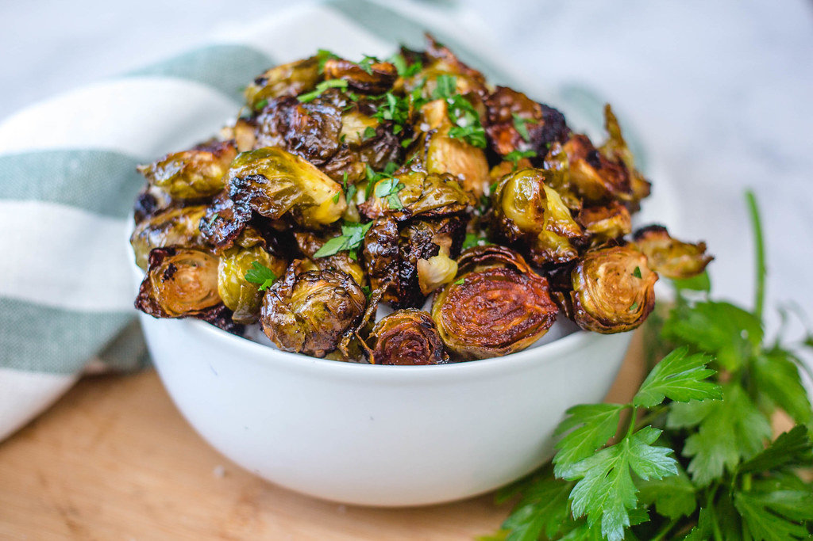

Roasted Brussels Sprouts
Description:
These roasted Brussels sprouts taste sweet and salty at the same time. They're seasoned perfectly and very easy to make. The sprouts should be brown with deliciously crispy bits on the outside when done
Ingredients
- 1 ½ pounds Brussels sprouts, ends trimmed and yellow leaves removed
- 3 tablespoons olive oil
- 1 teaspoon kosher salt
- ½ teaspoon freshly ground black pepper
Steps
- Gather all your ingredients. Preheat oven to 400 degrees F (205 degrees C).
- Place trimmed Brussels sprouts, olive oil, kosher salt, and pepper in a large resealable plastic bag. Seal tightly, and shake to coat.
- Pour onto a baking sheet, and place on center oven rack.
- Roast in the preheated oven for 30 to 45 minutes, shaking pan every 5 to 7 minutes for even browning. Reduce heat when necessary to prevent burning. Brussels sprouts should be darkest brown, almost black, when done. Adjust seasoning with kosher salt, if necessary. Serve immediately.